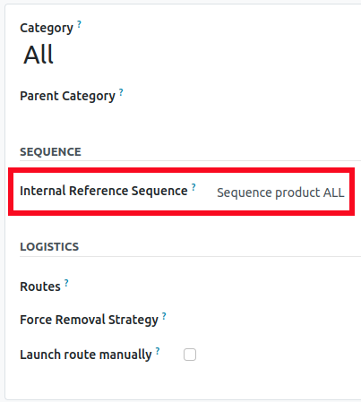
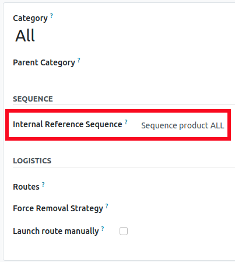

Activate Automatic Internal Reference Generation
You can enable this feature on the Inventory settings page.
Once activated, the internal reference field, barcode field, stylecode field for products will become same and read-only. When a new product is created, Odoo will automatically generate the internal reference based on the sequence defined for its category.
 

How It Works: An Example
Here's an example of how your product categories might be structured.
You don't need to set a sequence for every category. Odoo will search from the bottom up, applying the sequence of the parent category if a specific category doesn’t have one.
Below is the result for the internal references of products.
You can configure your own sequences by navigating to Settings > Technical > Sequences & Identifiers > Sequences.
Developer mode must be activated to access this menu.